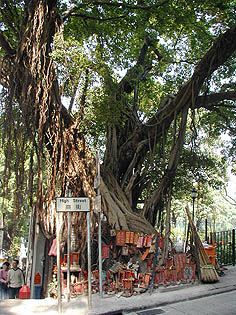
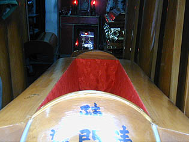
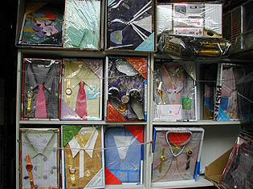
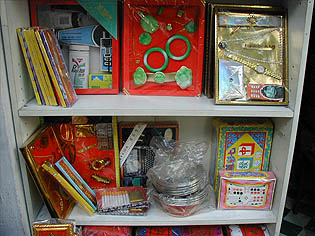
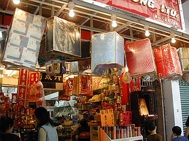
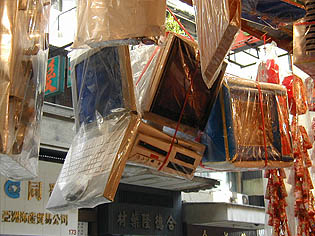
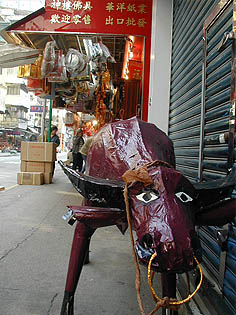

上環 SheungWan
香港島サイドの中心部、中環の西側は香港でも最も早くから開けた街、上環である。

その上環の高街にはガジュマルの神木がある。通りに面して赤い札がガンガン貼られて線香が手向けられている。
無気味だ。
さて、本日私がここ上環を訪れたのは先日、寶福山で見かけた素晴らしすぎる葬式グッズを売っている店があるというので見に来たのである。

荷李活道（HollyWoodRoad)の骨董品屋が並ぶお買い物エリアを過ぎると、ぐぐっと庶民チックなエリアに突入する。
その一画に棺桶屋発見。香港の棺桶はなかなか立派である。
この辺りは葬式関係グッズ屋が何軒か固まっている。
その中の一軒の店先。

コレ、全部紙製である。
あの世に旅立つ人の副葬品として燃やされる、文字どおり冥土の土産。
シャツとネクタイと時計セットの数々。10メートル離れたら本物と間違えてしまう程精巧な造り。
でも5メートル位で何かが違うことに気付き、3メートルで贋モノ（というか紙製）であることに気が付く感じ。

商品説明。
上の棚左よりシャンプーのリジョイなどが入ったグルーミングセット。
隣がヒスイ細工のつもりだろうか。その隣、ゴールドが粋な腕時計、携帯電話、タイピンなどの男のオシャレグッズ。
下の段には雀牌や中国将棋の駒、チョコレート、たばことライターと灰皿などが並んでいる。
もしも本物だったら物凄く節操のない品揃えの店だ。
逆にいえばこれらの冥土の土産の人気商品を見ることで現代の香港が見えて来るとはいえないだろうか。いえないか。

干物臭い通り沿いに冥土の土産専門店発見。
店内の主力商品は線香だが冥土の土産も充実している。
店先に吊られている箱をみてびっくり。冷蔵庫や洗濯機なのだ。
ちょっと見ると本物のように見えるので軒先に吊るされているとショックが大きい。
と同時に「何もそんなものまで作らなくても‥」と思うが、需要があるから供給されるのだろう。

こちらパソコン各種。デスクトップありノートあり。上写真右はiMacざんす。
元、パチもん帝国の香港だけあってその辺の「似せモノ」のツボはきっちり押さえてある。

路上にはオーダーメイドなのだろうか水牛が御主人様と共に旅立つのを待っていた。
次へ行きましょう 香港珍寺遊戯に戻る 珍寺大道場に戻る